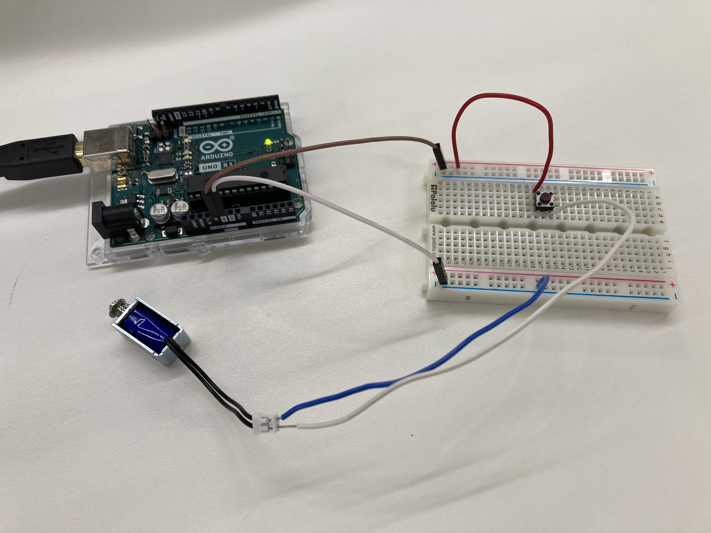

<br>
# Week 4: Electronic Output Devices
### In-class assignment:
<center>
Using a transistor to control high current loads with an arduino.
For this assignment, I used variously sized solenoids that required different voltages and currents to power. The video showcases the functionality of the solenoid controlled by a potentiometer.
<video width="600" height="1000" autoplay muted loop>
<source src="solenoid.mp4" type="video/mp4">
</video>
<br>
The model is built following this diagram below.
<br>
<br>

<video width="700" autoplay muted loop>
<source src="butsol.mp4" type="video/mp4">
</video>
</center>
Return to home: [link](../index.html).